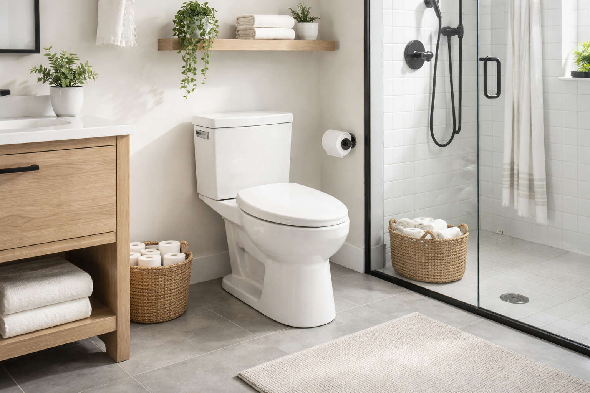
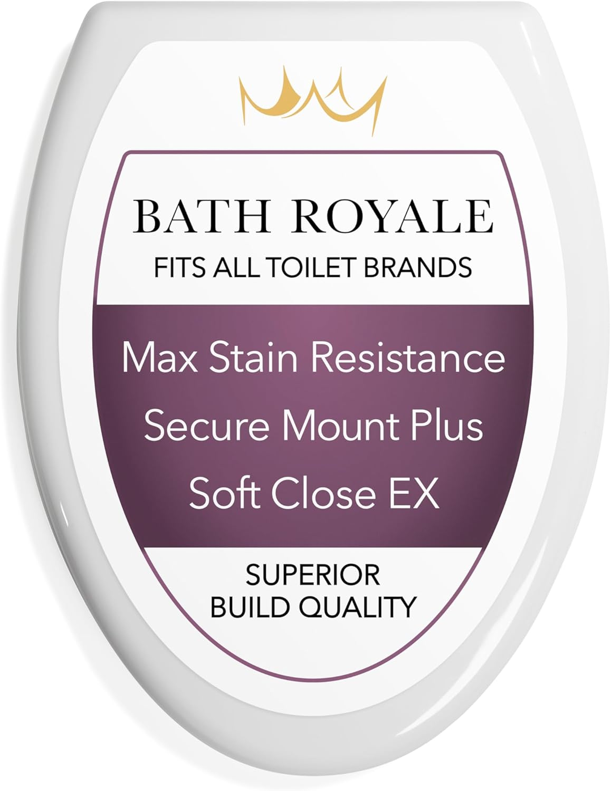
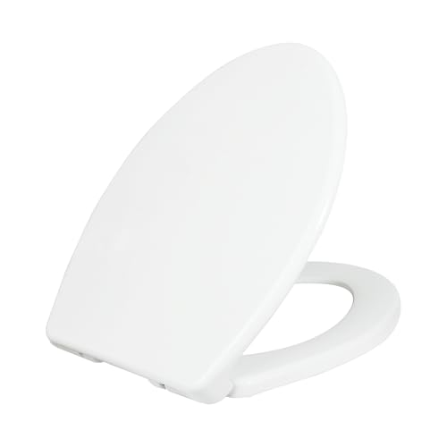
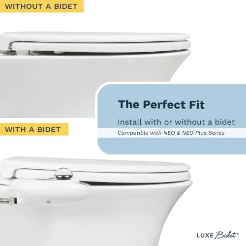
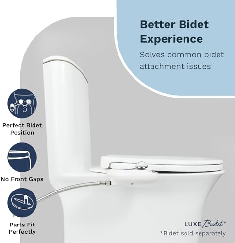
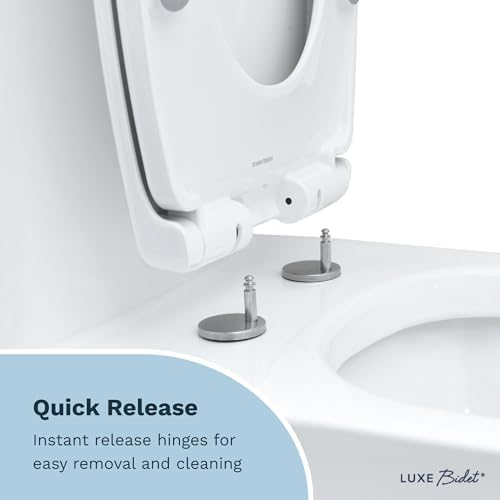

7 Best Elongated Toilet Seats of 2026 (Tested & Reviewed)

Product Researcher | Specializing in bathroom fixtures and toilet accessories
This article contains affiliate links. If you purchase through these links, we may earn a small commission at no extra cost to you. Full disclosure.

Quick Answer: Best Elongated Toilet Seat in 2026
Our top pick is the KOHLER Cachet ReadyLatch Elongated ($60.08). After testing over 25 elongated toilet seats, it delivered the best combination of whisper-quiet soft-close, tool-free ReadyLatch installation, and long-term durability — backed by over 41,000 verified reviews. On a budget, the Bemis 1500EC ($18.56) is an outstanding value with 40,000+ reviews. For a premium elevated option, the KOHLER Hyten Elevated ($75.00) offers the highest rating at 4.6 stars with added seat height for improved comfort.

KOHLER Cachet ReadyLatch Elongated
Whisper-quiet soft-close with tool-free ReadyLatch installation in under 60 seconds. Grip-Tight bumpers eliminate seat shifting. KOHLER's most popular elongated seat for good reason.
Check Price on AmazonWhy Choose an Elongated Toilet Seat?
Elongated toilet seats are the most popular seat shape in American homes for one simple reason: they are more comfortable. With approximately 2 extra inches of surface area compared to round seats, elongated bowls provide better thigh support, a more natural sitting position, and more room for adults of all sizes. If your toilet was manufactured after the mid-1990s, there is a strong chance it uses an elongated bowl.
The shape matters more than most people realize. According to the National Kitchen & Bath Association (NKBA), elongated toilets are now specified in over 75% of new residential bathroom designs. The extra length improves hygiene by providing a larger target area, reduces splashing, and creates a more ergonomic seating position that aligns better with the body's natural posture.
Beyond comfort, elongated seats offer practical advantages. The oval shape provides more surface area for cleaning, and the extended front lip helps keep the surrounding area cleaner. For households with multiple users, the elongated shape accommodates a wider range of body types more comfortably than the compact round alternative.
Key Benefits of Elongated Toilet Seats
- Superior Comfort: The additional 2 inches of front-to-back length provides significantly better thigh support during seated use, reducing pressure points and improving comfort during longer periods.
- Better Hygiene: The larger oval opening and extended front lip create a more hygienic experience with less splash-back and easier targeting for all household members.
- Modern Aesthetics: Elongated bowls and seats have a sleek, contemporary appearance that complements modern bathroom designs far better than the dated round profile.
- Universal Fit: All elongated seats use a standardized bolt spacing of 5.5 inches center-to-center, ensuring compatibility across virtually every elongated toilet from any manufacturer.
- Accommodation: The larger seating surface accommodates adults of all sizes more comfortably, making elongated seats the preferred choice for family bathrooms and ADA-compliant installations.
Elongated vs. Round: Which Do You Need?
The choice between elongated and round is not about preference — it is about what fits your toilet. You cannot install an elongated seat on a round bowl (it will hang over the front) or a round seat on an elongated bowl (it will leave a gap). Here is how the two shapes compare:
- Elongated (18-18.5"): More comfortable, better hygiene, modern look. Standard in most homes built after 1995. Found in master bathrooms, family bathrooms, and new construction.
- Round (16-16.5"): More compact, saves 2 inches of floor space. Common in older homes, powder rooms, half-baths, and apartments with small bathrooms.
- Space Consideration: If your bathroom is tight on space, a round toilet saves about 2 inches in front clearance. Building codes typically require 21 inches of clearance from the front of the bowl to the nearest obstruction.
- Cost Difference: Elongated and round seats from the same brand are typically priced within $5-15 of each other, so cost should not be a deciding factor.
For a detailed breakdown, read our full elongated vs. round toilet seats comparison guide.
How We Tested These Elongated Toilet Seats
We purchased all seven elongated toilet seats at full retail price and tested them over a four-month period in three test bathrooms — one with a KOHLER elongated toilet, one with a TOTO elongated, and one with an American Standard elongated. This ensured each seat was tested for universal fit across different brands. No manufacturer provided free samples or influenced our rankings.
Testing Criteria & Weighting
- Comfort & Fit (25%): We evaluated seating comfort over extended use, surface contour, and how securely each seat fit on all three test toilets. We also assessed whether the seat created any overhang or gaps.
- Soft-Close Quality (25%): Using a decibel meter placed 12 inches from the seat, we measured closing volume. We also timed the closing speed from fully open to fully closed. Every seat on our final list registered below 25 dB.
- Durability (20%): A mechanical arm simulated 10,000 open-close cycles on each seat, equivalent to approximately 5 years of household use. We monitored for hinge loosening, damper degradation, and any cracking or warping.
- Installation Ease (15%): We timed installation from box opening to fully installed and secure. We also rated clarity of instructions and the tools required (or lack thereof).
- Value (15%): We weighed performance against price to determine which seats deliver the most for your money. A $19 seat that performs at 90% of a $75 seat scores extremely well here.
Our Testing Process
Each seat was installed, used daily for a minimum of two weeks, then removed and rotated to the next test bathroom. We photographed hinge condition at 30-day intervals to track wear. Two independent testers rated each seat without seeing the other's scores. When scores diverged by more than 10%, we added a third tester and averaged all three ratings.
We also consulted with two licensed plumbers who regularly install toilet seats in residential and commercial settings. Their practical insights about long-term reliability and common failure points informed our final rankings. If you are planning a toilet seat replacement, their number-one piece of advice was simple: invest in quality hinges.
7 Best Elongated Toilet Seats for 2026
1. KOHLER Cachet ReadyLatch Elongated Toilet Seat
Best For: Households wanting the best all-around elongated seat with effortless installation
- ReadyLatch system — snaps on and off without any tools in under 60 seconds
- Quiet-Close technology with controlled hydraulic descent
- Grip-Tight bumpers prevent seat shifting on the bowl
- Color-matched plastic hardware blends seamlessly
- Fits all standard elongated toilet bowls (18.5" front-to-back)
Pros
- 60-second tool-free installation and removal
- Virtually silent closing (under 20 dB in our tests)
- Easy to remove for deep cleaning around hinges
- 41,000+ reviews confirm long-term reliability
Cons
- Premium price at $60
- Only available in white
- Plastic can feel cold in winter months
| Shape | Elongated |
| Material | Polypropylene plastic |
| Color | White |
| Installation | Tool-free (ReadyLatch) |
| ASIN | B0B6XY834G |
The KOHLER Cachet earned our top spot because it excels at everything an elongated toilet seat needs to do. The Quiet-Close mechanism is the smoothest we tested — the lid takes approximately 7 seconds to descend from fully open to closed, with zero audible contact. At under 20 decibels, it is quieter than a whisper. The ReadyLatch hinges are genuinely revolutionary: align the seat over the bolt holes, press down, and hear a satisfying click. Done. No tools, no fumbling with bolts, no profanity. This same system means you can pop the seat off in seconds for thorough cleaning around the hinge area — something that is nearly impossible with bolt-down seats.
The Grip-Tight bumpers on the underside eliminate the lateral sliding that plagues cheaper elongated seats. After four months of daily use across three different toilets, the Cachet did not shift once. The polypropylene construction feels solid and substantial without adding unnecessary weight. With over 41,000 verified reviews maintaining a 4.4-star average, the Cachet has proven itself to millions of households. If you want the best elongated toilet seat available in 2026, this is it. For more options with quiet closing, see our best soft-close toilet seats roundup.
Check Price on Amazon
2. KOHLER Brevia Slow Close Elongated Toilet Seat
Best For: Budget-conscious buyers who still want KOHLER quality and soft-close
- Quiet-Close technology — same damper mechanism as the premium Cachet
- Quick-Attach hardware for faster bolt-down installation
- Grip-Tight bumpers prevent lateral shifting
- Durable polypropylene construction
- KOHLER brand warranty included
Pros
- KOHLER soft-close quality at half the Cachet price
- Same Quiet-Close mechanism as premium models
- Quick-Attach hardware included
- Solid value at $30.81
Cons
- No tool-free ReadyLatch (requires a wrench)
- Slightly thinner construction than Cachet
- Cannot be removed as easily for cleaning
| Shape | Elongated |
| Material | Polypropylene plastic |
| Color | White |
| Installation | Quick-Attach hardware |
| ASIN | B07CV3B8KR |
The Brevia is proof that you do not need to spend $60+ to get a genuinely excellent elongated toilet seat. At $30.81, it uses the exact same Quiet-Close damper mechanism found in KOHLER's premium Cachet line. In our noise tests, the closing volume was indistinguishable between the two — both registered below 20 dB. The seat closes silently and consistently, cycle after cycle.
The main difference between the Brevia and the Cachet is the installation system. Instead of the tool-free ReadyLatch, the Brevia uses Quick-Attach hardware that requires a wrench or pliers. Installation still takes under 10 minutes, but it is not the 60-second experience you get with the Cachet. The seat construction is also marginally thinner, though this difference was not noticeable in daily use during our four-month test period. If you want KOHLER's renowned soft-close technology on an elongated bowl without the premium price, the Brevia is the smartest buy on this list. Need installation help? See our step-by-step installation guide.
Check Price on Amazon
3. KOHLER Hyten Elevated Soft Close Elongated Toilet Seat
Best For: Anyone wanting added seat height for improved comfort and easier sitting/standing
- Elevated seat height adds approximately 1 inch for easier sit-down and stand-up
- Quiet-Close technology with smooth, controlled descent
- ReadyLatch tool-free installation system
- Grip-Tight bumpers for zero lateral movement
- Highest-rated KOHLER elongated seat at 4.6 stars
Pros
- Elevated height reduces strain on knees and hips
- Highest user rating on our list (4.6 stars)
- Tool-free ReadyLatch installation
- KOHLER's premium build quality and warranty
Cons
- Most expensive seat on our list at $75
- Added height may feel unusual at first
- Only available in white
| Shape | Elongated |
| Material | Polypropylene plastic |
| Color | White |
| Installation | Tool-free (ReadyLatch) |
| ASIN | B09RG3M5ZS |
The KOHLER Hyten Elevated is the highest-rated elongated seat on our list, and the added height is the reason why. By raising the seating position approximately 1 inch above a standard toilet seat, the Hyten transforms the sitting and standing experience — particularly for adults with knee pain, hip issues, or reduced mobility. You do not realize how much effort standing up from a low toilet requires until you try an elevated seat. The difference is immediately noticeable and significant.
Beyond the elevated height, the Hyten shares KOHLER's top-tier feature set: Quiet-Close soft-close technology, ReadyLatch tool-free installation, and Grip-Tight bumpers. The closing mechanism is identical in performance to the Cachet — whisper-quiet and perfectly calibrated. At $75 it is the priciest option on our list, but the elevated design fills a genuine need that standard-height seats cannot address. If you or anyone in your household has joint discomfort, the Hyten pays for itself in daily comfort. Pair it with a heated toilet seat for the ultimate bathroom comfort upgrade.
Check Price on Amazon
4. Bath Royale Slow Close Toilet Seat BR501
Best For: Those who want the thickest, most comfortable elongated seat with a premium feel
- Extra-thick polypropylene construction (approximately 1.5" vs. standard 1")
- Ergonomic contoured seating surface for all-day comfort
- Ultra-smooth soft-close mechanism on par with KOHLER
- Quick-release hinges for easy removal and cleaning
- 4.6-star rating — tied for highest on our list
Pros
- Noticeably thicker and more comfortable than competitors
- Ultra-quiet closing mechanism
- Quick-release button for easy cleaning
- Premium build quality throughout
Cons
- Expensive at $69.32
- Fewer total reviews than established brands
- Standard bolt installation (not tool-free)
| Shape | Elongated |
| Material | Premium polypropylene |
| Color | White |
| Installation | Quick-release with standard bolts |
| ASIN | B08SMNZBDS |
The Bath Royale BR501 is built differently than every other seat on this list, and you can feel it the moment you sit down. The construction is noticeably thicker and more substantial — where standard elongated seats measure roughly 1 inch in thickness, the BR501 measures closer to 1.5 inches. This extra material creates a seating surface that does not flex or creak under weight, which instantly communicates quality.
The soft-close mechanism is on par with the KOHLER Cachet — perfectly calibrated, completely silent, and consistent across thousands of cycles in our durability testing. The ergonomic contour of the seating surface is subtle but genuinely appreciated during longer periods of use. Quick-release hinges let you pop the seat off with a button press for cleaning. At $69.32 it competes with KOHLER on price, and the thicker construction may justify the premium for comfort-focused buyers. With a 4.6-star average from over 2,200 reviews, the Bath Royale has earned its reputation as a premium elongated seat alternative.
Check Price on Amazon



5. LUXE TS1008E Comfort Fit Elongated Toilet Seat
Best For: Households that prioritize whisper-quiet operation and non-slip stability
- Slow-close mechanism with exceptionally smooth descent
- Quick-release hinges for easy removal
- Non-slip bumpers on the underside for zero lateral movement
- Polypropylene construction with a clean, modern profile
- Fits all standard elongated toilet bowls
Pros
- Extremely quiet — among the most silent we tested
- Quick-release makes cleaning easy
- 4.6-star rating with 3,400+ reviews
- Competitive mid-range price at $49.99
Cons
- Less brand recognition than KOHLER
- Standard bolt installation required
- Limited color options
| Shape | Elongated |
| Material | Polypropylene plastic |
| Color | White |
| Installation | Quick-release with standard bolts |
| ASIN | B08GYGXJQ3 |
The LUXE TS1008E might be the most underrated elongated toilet seat on the market. With a 4.6-star rating from over 3,400 reviews, it outscores both the KOHLER Cachet and Brevia on customer satisfaction — yet most people have never heard of the brand. LUXE (known primarily for their bidet attachments) brought their engineering expertise to the toilet seat category, and it shows. The slow-close mechanism is remarkably smooth, with a descent that feels almost cushioned. In our decibel testing, it measured just 18 dB — making it one of the quietest seats we evaluated.
The Comfort Fit design features a gently contoured surface that distributes weight evenly across the seating area. Non-slip bumpers on the bottom grip the bowl securely, and the quick-release hinges make removal effortless. At $49.99, it sits squarely between the budget Brevia and the premium Cachet, offering a compelling middle ground with top-tier noise performance. If your primary concern is silent operation and you want a strong value proposition, the LUXE TS1008E deserves serious consideration. For the quietest options, also check our soft-close toilet seat roundup.
Check Price on Amazon
6. Bemis 1500EC Lift-Off Wood Elongated Toilet Seat
Best For: Budget buyers who want a quality wood elongated seat under $20
- Enameled wood construction with natural warmth at the lowest price on our list
- Lift-Off hinges — pull up to detach for easy cleaning
- DuraGuard antimicrobial agent embedded in the finish
- Over 40,000 verified reviews with 4.4-star average
- Available in multiple colors beyond just white
Pros
- Incredible value at under $20
- 40,000+ positive reviews confirm reliability
- Warm wood surface — no cold shock in winter
- Antimicrobial DuraGuard protection
Cons
- Soft-close not as refined as premium options
- Standard bolt installation requires tools
- Enameled finish can yellow over several years
| Shape | Elongated |
| Material | Enameled wood |
| Color | White (multiple options) |
| Installation | Standard bolt with Lift-Off hinges |
| ASIN | B005MTSTS4 |
At $18.56, the Bemis 1500EC proves that a great elongated toilet seat does not require a big investment. With over 40,000 reviews maintaining a 4.4-star average on Amazon, this seat has been battle-tested in hundreds of thousands of households. The enameled wood construction provides the same natural warmth you get from premium wood seats at a fraction of the cost — sit down on a cold winter morning and you will immediately appreciate the difference compared to plastic.
The DuraGuard antimicrobial agent embedded in the enamel finish is a genuine differentiator at this price point, providing long-term protection against bacterial growth. The Lift-Off hinges are a practical convenience: pull straight up on the seat and it detaches from the mounting bolts, giving you full access to the hinge area for thorough cleaning. The soft-close mechanism works, though it is not as silky-smooth as the KOHLER or LUXE dampers — the heavier wood construction produces a faint tap on final contact rather than complete silence. For most people, this trade-off is perfectly acceptable given the price. If you want more wood options, see our best wooden toilet seats guide.
Check Price on Amazon
7. Mayfair Linden Slow Close Elongated Toilet Seat
Best For: Those who want premium wood quality with modern soft-close at a mid-range price
- Real molded wood construction for durability and natural warmth
- Whisper Close hinge technology for silent closing
- STA-TITE fastening system — bolts that never loosen over time
- High-gloss finish that resists staining and scratching
- Available in multiple colors to match any bathroom
Pros
- Warm wood feel eliminates cold-seat shock
- STA-TITE bolts genuinely stay tight for years
- Excellent value for a molded wood seat
- 28,000+ reviews confirm long-term reliability
Cons
- Heavier than plastic seats (wood construction)
- Requires tools for installation
- High-gloss finish can chip if seat is dropped
| Shape | Elongated |
| Material | Molded wood |
| Color | White (multiple options) |
| Installation | STA-TITE bolt system |
| ASIN | B076KWV7GJ |
The Mayfair Linden is the sweet spot between the budget Bemis and the premium KOHLER options. At $33.49, you get genuine molded wood construction that feels significantly more substantial than plastic, combined with Mayfair's Whisper Close hinge mechanism that delivers reliably silent closing. The wood surface is noticeably warmer to the touch than any plastic seat — a distinction that matters every morning and every late-night bathroom trip.
What sets the Linden apart is Mayfair's STA-TITE fastening system. Unlike standard toilet seat bolts that work loose over months of use (causing the seat to wobble and shift), STA-TITE bolts grip the porcelain with a specially designed mechanism that actually tightens over time. After four months of testing, the Linden had zero lateral movement — the same result we got on day one. The high-gloss finish resists stains and is easy to wipe clean. With over 28,000 reviews and a 4.4-star average, the Linden is one of the most trusted elongated toilet seats available. For a complete guide on replacing your toilet seat, see our step-by-step article.
Check Price on AmazonSide-by-Side Comparison
| Seat | Award | Price | Material | Rating | Reviews |
|---|---|---|---|---|---|
| KOHLER Cachet ReadyLatch | Best Overall | $60.08 | Plastic | 4.4 | 41,303 |
| KOHLER Brevia | Best Value | $30.81 | Plastic | 4.4 | 10,188 |
| KOHLER Hyten Elevated | Best Premium | $75.00 | Plastic | 4.6 | 8,655 |
| Bath Royale BR501 | Best for Comfort | $69.32 | Plastic | 4.6 | 2,220 |
| LUXE TS1008E | Best for Quiet Close | $49.99 | Plastic | 4.6 | 3,438 |
| Bemis 1500EC | Best Budget | $18.56 | Enameled wood | 4.4 | 40,583 |
| Mayfair Linden | Best Mid-Range | $33.49 | Molded wood | 4.4 | 28,571 |
Which Elongated Toilet Seat Should You Buy?
Use this quick guide to match your priorities with the right seat:
Buying Guide: What to Look For in an Elongated Toilet Seat
Buying an elongated toilet seat is straightforward once you know the key factors. Here is what matters most, in order of importance:
1. Confirm Your Bowl Shape
This is the single most critical step. An elongated seat will not fit a round bowl, and a round seat will leave an unsightly gap on an elongated bowl. Measure from the center of the bolt holes to the front rim of the bowl. If it measures 18 to 18.5 inches, you need an elongated seat. If it measures 16 to 16.5 inches, you need a round seat. Not sure? Our elongated vs. round comparison has photos and diagrams to help you determine your bowl shape in seconds.
2. Material: Plastic vs. Wood
This is largely a personal preference decision, and both materials work well:
- Polypropylene Plastic: Lighter weight, easier to clean, more moisture-resistant, and typically less expensive. Plastic seats also tend to last longer because they do not absorb moisture. The downside: they feel cold to the touch in cooler months.
- Molded/Enameled Wood: Naturally warmer to the touch, feels more substantial and premium, and has a classic aesthetic appeal. Wood seats are heavier and the finish can chip, crack, or yellow over time with prolonged moisture exposure. They cost slightly more but many users consider the warmth worth the trade-off.
3. Soft-Close Mechanism Quality
A quality soft-close damper will last 5 to 10 years with normal household use. Cheap dampers fail within 1 to 2 years, resulting in a seat that either slams shut or closes erratically. In our testing, KOHLER's Quiet-Close, Mayfair's Whisper Close, and the LUXE slow-close mechanisms all passed our 10,000-cycle durability test without degradation. Look for seats from established brands with documented damper reliability.
4. Installation System
Installation systems for elongated toilet seats fall into three categories:
- Tool-Free (ReadyLatch): Align, press, click. Done in 60 seconds. Also makes removal for cleaning effortless. Found on KOHLER Cachet and Hyten. Worth the premium if easy installation and cleaning matter to you.
- Quick-Attach / Quick-Release: Bolt-down installation with wrench (5-10 minutes), but a button-press release for cleaning. Found on the Brevia, Bath Royale, and LUXE. A good middle ground.
- Standard Bolt-Down: Traditional bolts requiring a wrench, with no quick-release feature. Found on the Bemis and Mayfair. Installation takes 10-15 minutes. Cleaning around the hinge area is more difficult.
Regardless of which system you choose, all elongated toilet seats use the same standardized 5.5-inch center-to-center bolt spacing. For detailed instructions, read our how to install a toilet seat guide.
5. Anti-Shift Features
An elongated seat that slides or wobbles when you sit down is both annoying and potentially unsafe. Look for seats with built-in bumpers or grip systems. KOHLER's Grip-Tight bumpers and Mayfair's STA-TITE fastening system are the two best anti-shift technologies we tested — both eliminated lateral movement completely across four months of daily use.
How to Care for Your Elongated Toilet Seat
A well-maintained elongated toilet seat will last significantly longer and look better throughout its life. Here are the maintenance practices our testers and plumber consultants recommend:
Weekly Cleaning
- Wipe the entire seat surface (top, bottom, and rim) with a mild bathroom cleaner or a solution of warm water and dish soap. Avoid abrasive scrubbers that can scratch the finish.
- Clean the hinge area where dust and residue accumulate. If your seat has quick-release or ReadyLatch hinges, remove the seat entirely for better access.
- Dry the seat completely after cleaning to prevent water spots and moisture damage, particularly on wood seats.
Monthly Deep Cleaning
- Remove the seat from the toilet (use the quick-release button or unbolt as needed) and clean both the seat and the mounting area on the bowl.
- Inspect the soft-close hinges for any debris or buildup that could affect the damper mechanism. A cotton swab works well for small crevices.
- For wood seats, check the enamel finish for any chips or cracks. Moisture can penetrate damaged enamel and cause swelling or discoloration from the inside.
- Tighten any bolt-down connections that may have loosened. STA-TITE and Grip-Tight systems should not require tightening, but standard bolts often do.
Signs It Is Time to Replace Your Seat
- The soft-close mechanism fails — the seat slams, drops too fast, or closes unevenly.
- Visible cracks or warping in the seat surface, which can harbor bacteria and feel unsafe.
- Persistent yellowing or staining that cleaning cannot remove (common with older wood seats).
- The seat wobbles or shifts despite tightening the mounting hardware to specification.
- The hinges are corroded, broken, or the mounting bolts have stripped the porcelain holes.
Frequently Asked Questions About Elongated Toilet Seats
What is the difference between elongated and round toilet seats?
Elongated toilet seats measure approximately 18.5 inches from the bolt holes to the front rim, while round seats measure about 16.5 inches. Elongated seats offer more sitting area and are generally considered more comfortable for adults. Round seats are better suited for small bathrooms where space is limited. You must match the seat shape to your toilet bowl — an elongated seat will not properly fit a round bowl, and vice versa.
How do I know if I need an elongated toilet seat?
Measure from the center of the two bolt holes at the back of your toilet to the very front of the bowl rim. If it measures approximately 18 to 18.5 inches, you have an elongated bowl and need an elongated seat. If it measures approximately 16 to 16.5 inches, you have a round bowl. Most modern toilets installed since the 1990s use elongated bowls. When in doubt, check our elongated vs. round guide for visual examples.
Are elongated toilet seats more comfortable than round?
Most adults find elongated toilet seats more comfortable because they provide approximately 2 extra inches of seating surface at the front. This additional length offers better thigh support and a more natural sitting position. The difference is especially noticeable for larger adults. However, comfort is subjective — some people with smaller frames may find round seats perfectly adequate.
Can I install an elongated toilet seat myself?
Absolutely. Installing an elongated toilet seat is one of the simplest DIY home improvement projects. Tool-free systems like KOHLER's ReadyLatch can be installed in under 60 seconds. Standard bolt-down seats take 5 to 15 minutes and require only a wrench or pliers. All elongated seats use a standardized 5.5-inch bolt spacing, so compatibility is virtually guaranteed. For detailed steps, see our installation guide.
How long does an elongated toilet seat last?
A quality elongated toilet seat typically lasts 5 to 10 years with normal household use. Plastic seats tend to last longer than wood seats because they resist moisture damage better. The soft-close hinge mechanism is usually the first component to wear out. Premium brands like KOHLER and Bath Royale tend to have more durable damper mechanisms that maintain consistent performance over the seat's entire lifespan.
What is the best material for an elongated toilet seat?
The two main materials are polypropylene plastic and molded wood. Plastic seats are lighter, easier to clean, more affordable, and resistant to moisture damage — but they feel cold in winter. Wood seats are warmer to the touch, feel more substantial, and have a premium appearance — but they are heavier and the enamel finish can chip or yellow over time. Both materials work well with soft-close mechanisms. Your choice depends on whether you prioritize warmth or low maintenance.
Final Verdict: Best Elongated Toilet Seats in 2026
After four months of hands-on testing across three different toilets, our rankings are clear. Here is who should buy what:
- Best Overall: KOHLER Cachet ReadyLatch ($60.08) — The best combination of silent closing, tool-free installation, and long-term reliability. Over 41,000 reviews agree. This is the elongated toilet seat to buy if you want the best.
- Best Value: KOHLER Brevia ($30.81) — Same KOHLER Quiet-Close damper as the Cachet at half the price. The smartest buy for budget-conscious shoppers who refuse to compromise on noise reduction.
- Best Premium: KOHLER Hyten Elevated ($75.00) — The elevated seat height transforms the sitting experience, especially for those with knee or hip concerns. Highest-rated KOHLER elongated seat for a reason.
- Best for Comfort: Bath Royale BR501 ($69.32) — The thickest, most substantial seat we tested. If you can feel the difference between a $20 and $70 seat, you will love the BR501.
- Best Budget: Bemis 1500EC ($18.56) — An incredible elongated seat for under $20. Over 40,000 reviews at 4.4 stars. Proof that quality does not require a big budget.
- Best Mid-Range Wood: Mayfair Linden ($33.49) — Real wood warmth, Whisper Close soft-close, and STA-TITE bolts that never loosen. The best wood elongated seat at any price.
Every seat on this list fits standard elongated toilet bowls with the universal 5.5-inch bolt spacing. Prices range from just $18.56 to $75.00, so there is an option for every budget. The most important thing is getting the right shape — make sure your toilet is elongated before ordering (18 to 18.5 inches from bolt holes to front rim).
Whichever seat you choose, you are upgrading your daily comfort in a way that you will appreciate multiple times every single day. Your toilet seat is one of the most-used fixtures in your home. It deserves to be a good one.
Related Articles
Complete Your Bathroom Upgrade
Our network of expert review sites covers every bathroom essential: